As beginners, we all make a common mistake when it comes to fitness, that without knowing anything about our body, muscles or diet we think hitting the gym and lifting weights will be enough to bulk up or gain weight, but this is not that easy.
Bulking up or gaining weight is just as much difficult as losing weight. Before you start working out you need to have this basic knowledge about yourself. This website will provide you the basic information that you need to have before hitting the gym. Also, I understand that a lot of people can't afford to go to a costly gym and giving > 1000k/month, I also had that problem so I started to collect knowledge about fitness first then I started working out. I hope you will enjoy reading this website. Let's start.
Why you need to workout?
Physical activity or exercise can improve your health and reduce the risk of developing several diseases like type 2 diabetes, cancer and cardiovascular disease. Physical activity and exercise can have immediate and long-term health benefits. Most importantly, regular activity can improve your quality of life. A minimum of 30 minutes a day can allow you to enjoy these benefits.
Benefits of regular physical activity
If you are regularly physically active, you may:
reduce your risk of a heart attack
manage your weight better
have a lower blood cholesterol level
lower the risk of type 2 diabetes and some cancers
have lower blood pressure
have stronger bones, muscles and joints and lower risk of developing osteoporosis
lower your risk of falls
recover better from periods of hospitalisation or bed rest
Feel better – with more energy, a better mood, feel more relaxed and sleep better.
Most of the time, the beginners make a common mistake that is, they ignore the diet. If you are going to the gym daily and not fueling up with enough food then you will not see any improvement and also you will lose more weight. So the first step to fitness is setting your proper diet.
The food we eat plays a vital role in how we look and feel. Regular exercise is important but according to research, nutrition has the largest impact on our fitness. Using food as our medicine has become a popular theme for health improvement.
➣ Where to start
Know your BMR
The basal metabolic rate (BMR) is the amount of energy needed while resting in a temperate environment when the digestive system is inactive. It is the equivalent of figuring out how much gas an idle car consumes while parked. In such a state, energy will be used only to maintain vital organs, which include the heart, lungs, kidneys, nervous system, intestines, liver, lungs, sex organs, muscles, and skin. For most people, upwards of ~70% of total energy (calories) burned each day is due to upkeep. Physical activity makes up ~20% of expenditure and ~10% is used for the digestion of food, also known as thermogenesis.
Calculate your BMR
Results:
Length onversion
Results:
Weight conversion
Results:
Here I used the Mifflin-St Jeor Equation which is more accurate than any other early equations. "Please note that BMR estimates your basal metabolic rate—the amount of energy expended while at rest in a neutrally temperate environment, and in a post-absorptive state (meaning that the digestive system is inactive, which requires about 12 hours of fasting)" . So if you already exercise for 3-4 days/ 6-7 days ,then your BMR will increase, upon your activity level you need to understand how much calories you need daily to fuel up.
Alwyas remember "the 70% diet and 30% workout rule"
Suppose your weight is between 50kg-55kg and height 5'5"-5'9" and age 20-22 then your BMR should be or above: 1555 calories/day, while at rest in a neutrally temperate environment. So you need total 2500-3000 calories/day to gain 0.25-1kg weight/week.
step1: Calculate your BMR and calculate how many calories you need
step2: Find your macronutrient ratio
There’s a wide world of thoughts on which macronutrient ratio is best, so we narrowed it down to the three most popular approaches: The Zone Diet, Lean Mass, and Body Type. In your spreadsheet, you’ll see options for all three. Select one based on some of the information below and stick with it.
Macros Based on The Zone Diet
A lot of CrossFitters and other athletes follow something close to The Zone Diet: 40% carbs, 30% fat, and 30% protein. A former research scientist, Dr. Sears, first published this diet in his 1995 book, based on several research trials that showed improved athlete performance and body composition.
Macros Based on Lean Mass
Proponents of this approach feel that using your total body weight to calculate your macros isn’t as accurate as using your lean body mass (your mass minus your fat). This approach bases your necessary protein intake on that lean mass, and will vary between people as a result.
Macros Based on Body Type
Each body type responds differently to macronutrients, so calculating based on body type can be a great way to find your macros. Keep in mind that most people don’t strictly adhere to one body type.
– Ectomorph: Ectomorphs are naturally thin with skinny limbs, a high tolerance for carbohydrates, and a fast metabolic rate. A good starting ratio is 25% protein, 55% carbs and 20% fat. – Mesomorph: Mesomorphs are naturally muscular and athletic. They have a moderate carb tolerance and metabolic rate. Mesomorphs should start at a 30% protein, 40% carb, 30% fat ratio. – Endomorph: If you’re naturally broad and thick, you’re probably an endomorph. Endomorphs have a low carbohydrate tolerance and a slow metabolic rate. If you’re an endomorph, try a ratio of 35% protein, 25% carbs and 40% fat.
step3: Prepare your Diet and Track it
Once you’ve decided which macro-calculating approach sounds best to you, use the information in your spreadsheet to begin planning out your meals. Using a scale and measuring cups/spoons will help you stay consistent and make it easier to calculate your calories. Or you can use some application to messure and track calories . I will give some best application link below.
Don’t put your body into starvation mode by under-eating. This will not only throw your hormones out of balance, but it’ll also affect your ability to lose weight and put on lean muscle.
Try to make each meal have a good source of protein, carbohydrates, and fat. All calories are not created equal.
EAT ALL YOUR MACROS.
Eat on a consistent schedule. Sounds simple, but it’s easy to get swept up in the flow of the day and forget to eat. Highs and lows in your blood sugar can cause stress to your body, leading to inflammation, hormone imbalances, interrupted sleep and more.
Be sure to eat protein and carbs after your workout to aid your recovery.
If you’re new to the Clean Challenge, then try to replace simple carbs like bread, pasta and cereal with healthy carbs like starchy fruits, veggies and rice. It’s important to get enough carbs so you can recover from your CrossFit workouts.
You can consult with a Dietitian or you can reserach online or by watching helpful youtube video on pre-workout, post-workout meal and daily meal to make a proper diet for yourself. I would advice everyone don't go for the supplyments, at first try to make proper diet, follow the diet strictly. If you don't see any changes then consult a doctor. Try to make improvements naturally not by consuming powders.
➣ Height & Weight ratio for adult men and women
Height ft. in. (cms)
Female
Male
4' 6" (137 cm)
63 - 77 lb (28.5 - 34.9 kg)
63 - 77 lb (28.5 - 34.9 kg)
4' 7" (140 cm)
68 - 83 lb (30.8 - 37.6 kg)
68 - 84 lb (30.8 - 38.1 kg)
4' 8" (142 cm)
72 - 88 lb (32.6 - 39.9 kg)
74 - 90 lb (33.5 - 40.8 kg)
4' 9" (145 cm)
77 - 94 lb (34.9 - 42.6 kg)
79 - 97 lb (35.8 - 43.9 kg)
4' 10" (147 cm)
81 - 99 lb (36.4 - 44.9 kg)
85 - 103 lb (38.5 - 46.7 kg)
4' 11" (150 cm)
86 - 105 lb (39 - 47.6 kg)
90 - 110 lb (40.8 - 49.9 kg)
5' 0" (152 cm)
90 - 110 lb (40.8 - 49.9 kg)
95 - 117 lb (43.1 - 53 kg)
5' 1" (155 cm)
95 - 116 lb (43.1 - 52.6 kg)
101 - 123 lb (45.8 - 55.8 kg)
5' 2" (157 cm)
99 - 121 lb (44.9 - 54.9 kg)
106 - 130 lb (48.1 - 58.9 kg)
5' 3" (160 cm)
104 - 127 lb (47.2 - 57.6 kg)
112 - 136 lb (50.8 - 61.6 kg)
5' 4" (163 cm)
108 - 132 lb (49 - 59.9 kg)
117 - 143 lb (53 - 64.8 kg)
5' 5" (165 cm)
113 - 138 lb (51.2 - 62.6 kg)
122 - 150 lb (55.3 - 68 kg)
5' 6" (168 cm)
117 - 143 lb (53 - 64.8 kg)
128 - 156 lb (58 - 70.7 kg)
5' 7" (170 cm)
122 - 149 lb (55.3 - 67.6 kg)
133 - 163 lb (60.3 - 73.9 kg)
5' 8" (173 cm)
126 - 154 lb (57.1 - 69.8 kg)
139 - 169 lb (63 - 76.6 kg)
5' 9" (175 cm)
131 - 160 lb (59.4 - 72.6 kg)
144 - 176 lb (65.3 - 79.8 kg)
5' 10" (178 cm)
135 - 165 lb (61.2 - 74.8 kg)
149 - 183 lb (67.6 - 83 kg)
5' 11" (180 cm)
140 - 171 lb (63.5 - 77.5 kg)
155 - 189 lb (70.3 - 85.7 kg)
6' 0" (183 cm)
144 - 176 lb (65.3 - 79.8 kg)
160 - 196 lb (72.6 - 88.9 kg)
6' 1" (185 cm)
149 - 182 lb (67.6 - 82.5 kg)
166 - 202 lb (75.3 - 91.6 kg)
6' 2" (188 cm)
153 - 187 lb (69.4 - 84.8 kg)
171 - 209 lb (77.5 - 94.8 kg)
6' 3" (191 cm)
158 - 193 lb (71.6 - 87.5 kg)
176 - 216 lb (79.8 - 98 kg)
6' 4" (193 cm)
162 - 198 lb (73.5 - 89.8 kg)
182 - 222 lb (82.5 - 100.6 kg)
6' 5" (195 cm)
167 - 204 lb (75.7 - 92.5 kg)
187 - 229 lb (84.8 - 103.8 kg)
6' 6" (198 cm)
171 - 209 lb (77.5 - 94.8 kg)
193 - 235 lb (87.5 - 106.5 kg)
6' 7" (201 cm)
176 - 215 lb (79.8 - 97.5 kg)
198 - 242 lb (89.8 - 109.7 kg)
6' 8" (203 cm)
180 - 220 lb (81.6 - 99.8 kg)
203 - 249 lb (92 - 112.9 kg)
6' 9" (205 cm)
185 - 226 lb (83.9 - 102.5 kg)
209 - 255 lb (94.8 - 115.6 kg)
6' 10" (208 cm)
189 - 231 lb (85.7 - 104.8 kg)
214 - 262 lb (97 - 118.8 kg)
6' 11" (210 cm)
194 - 237 lb (88 - 107.5 kg)
220 - 268 lb (99.8 - 121.5 kg)
7' 0" (213 cm)
198 - 242 lb (89.8 - 109.7 kg)
225 - 275 lb (102 - 124.7 kg)
From the above chart you can now guess what your ideal weight should be according to your height
➣ Protein(the most important macro)
Protein is required by everyone. Apart from muscle building, it has numerous other functions to play in our body as well. Protein are required for our immunity, for all enzymatic and hormonal functions, brain functioning, cells and tissue regeneration and repair. Deficiency of proteins might lead to loss of muscle, weakness, lethargy, fatigue, weak hair, brittle nails, loss of strength, altered hormonal and enzymatic functions and water retention in our body.
Usually our diets has been shown as insufficient in proteins due to which ICMR has given specific RDA for all individuals. 1g per kg body weight per day is advisable to all healthy individuals. These values increases in case the person is involved in any additional physical activity like a strength athlete or endurance athlete. Hence it not only an essential nutrients for them but for us as well.
➣ protein requirements
Type
Amount
Average person
1g/kg of body weight
Beginner(workout)
0.8g-1.7g/kg of body weight
Intermediate(workout)
1.4g-2.7g/kg of body weight
➣ Calculate your protein requirements
Results:
➣ Best protein sources
Food
Images
Grams of protein
Canned tuna – 3 ounces
20
Salmon – 3 ounces
19
Turkey breast – 3 ounces
26
Chicken breast – 3 ounces
27
Skirt steak – 3 ounces
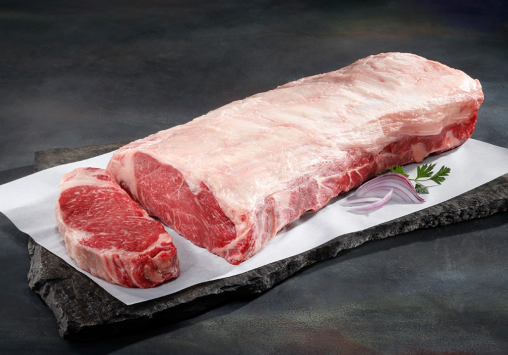
25
Ground beef (70% lean) – 3 ounces
22
Kidney beans – 1/3 cup
4
Black beans – 1/3 cup
5
Non-fat milk – 1/2 cup
4
Soy milk – 1/2 cup
4
Eggs – 1 large
6
Mozzarella cheese – 3 ounces
19
Cheddar – 3 ounces
19
Low-fat cottage cheese – 1/2 cup
12
Peanut butter – 2 tbsp.
7
Almonds – 1/4 cup (24 nuts)
8
Walnuts – 1/4 cup (14 halves)
3
Veggie burger – 1 patty
23
Tofu – 1/2 cup
11
Yogurt, plain – 1 cup
9
Whey protein powder – 1/3 cup
19
Source: USDA National Nutrient Database for Standard Reference
To know more about protein, please visit this site
Not just only protein you will need healthy fat and high carbs healthy food also to maintain, gain weight. If you want lists of healthy fat and carbs contact me -
Please note that this diet plan was made by me for my requirements under budget, you can obviously change or upgrade this plan. But this plan gives > 3000 calories/day.
Remember to take sufficient protein and food after workout because that is the time when your body need them most to repair the damaged muscles and create new stronger muscles. Make sure to make a preworkout and postworkout diet.
Know your body
The muscular system is responsible for the movement of the human body. Attached to the bones of the skeletal system are about 700 named muscles that make up roughly half of a person’s body weight. Each of these muscles is a discrete organ constructed of skeletal muscle tissue, blood vessels, tendons, and nerves. Muscle tissue is also found inside of the heart, digestive organs, and blood vessels. In these organs, muscles serve to move substances throughout the body.
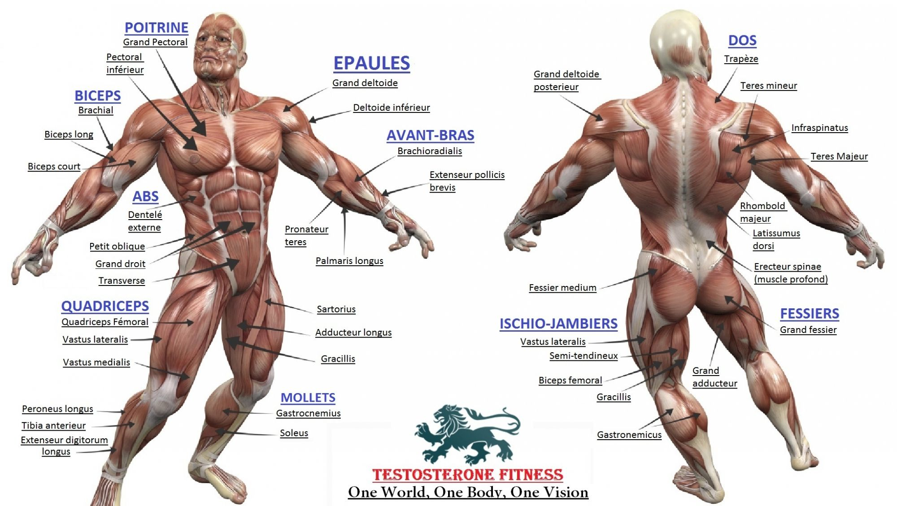
So from the above picture you can see all different muscles of human body
➣ Upper Body
Upper Back Muscles
Trapezius
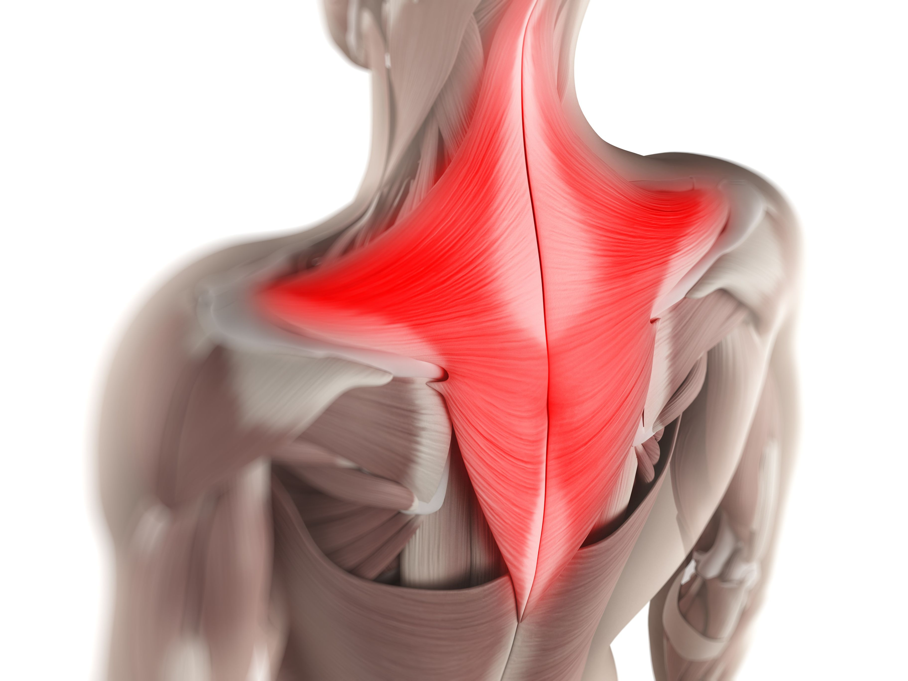
This is a large triangular shaped muscle that runs from the centre of your back up to the neck, running across your shoulder blade. Working the trapezius will help to sculpt the back of your shoulders. As a bonus, strengthening this muscle will also help to ward off back and neck pain - the sort of dull ache you get from sitting at a desk or computer all day.
Rhomboids
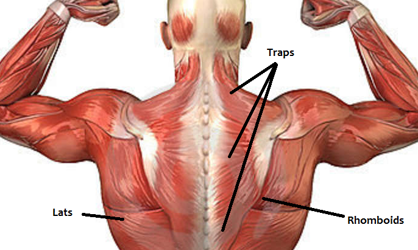
These are small muscles in the centre of your back, running up to just below the base of your neck. Working the rhomboids will help to hold your shoulders back and maintain good posture.
latissimus dorsi
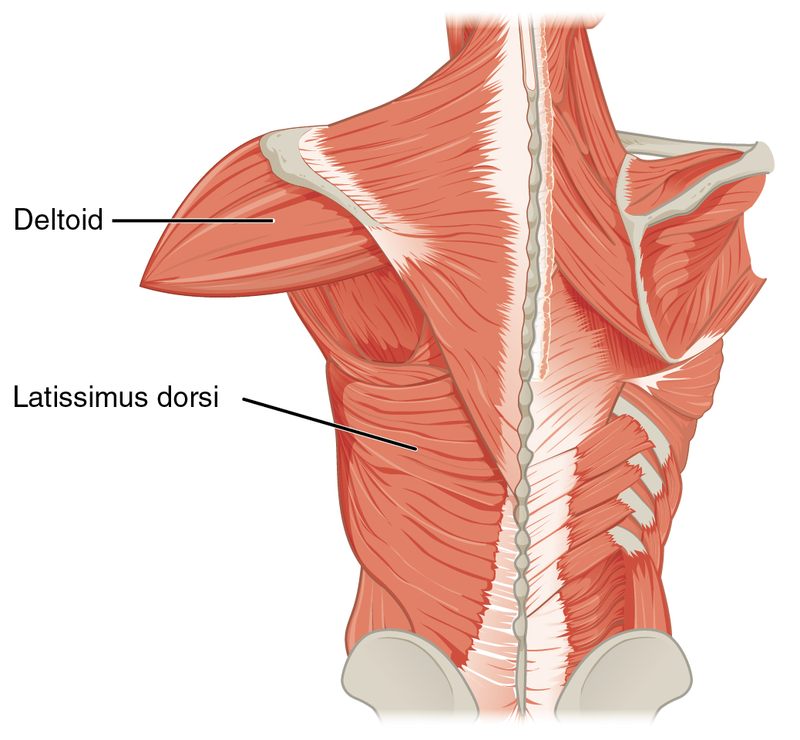
The latissimus dorsi is a large, flat muscle on the back that stretches to the sides, behind the arm, and is partly covered by the trapezius on the back near the midline.The pair of muscles are commonly known as "lats", especially among bodybuilders. The latissimus dorsi is the largest muscle in the upper body.
Shoulder Muscles
Deltoids
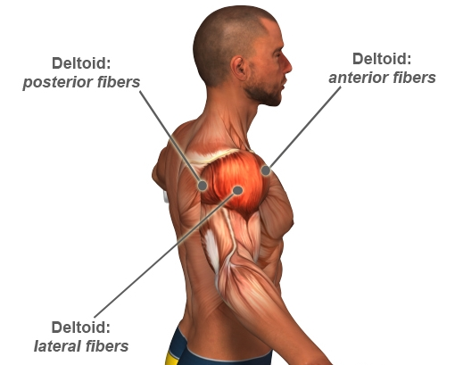
These muscles wrap right around the top of your shoulders. They are split into three areas - the front/anterior deltoid, the side/lateral deltoid, and the rear/posterior deltoid. It is these muscles that give your shoulders their versatility and great range of movement. Toning these will help to give a more defined silhouette; less rounded and sloping and a little more sharp a shape.
Rotator Cuff (Rotators)
Four small muscles beneath your shoulder that help to hold your arm in place. Firming and strengthening here helps to pull in your underarm. Think roll-on deodorant ads, and having a smooth looking armpit when raising your arms and getting down on the dancefloor.
Chest Muscles
Pectorals
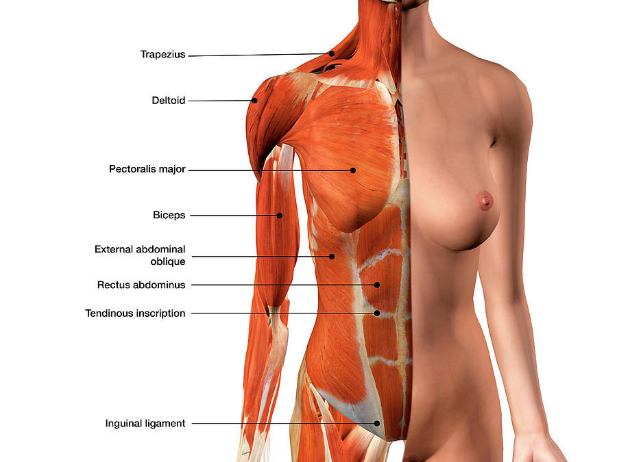
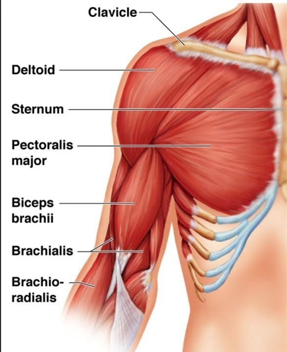
These are two large, flat muscles that run across the surface of your chest. These muscles generally come into play when pushing something or hugging someone. The benefit of working the pectorals is somewhat different for men and women. For men, exercising these muscles will increase chest size and definition. For women, these are the muscles underlying and providing support for the bust, so toning them will help to lift the bust.
Arm Muscles
Biceps
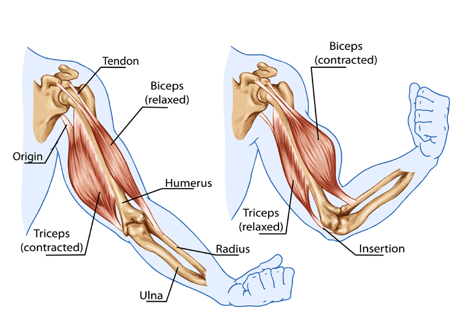
The muscles at the front of your upper arm. You use these when you bend your arm or pick things up. These are the ones you flex when showing someone how big (or small) the muscles in your arms are. Toning these will give shape and definition to your upper arm.
Triceps
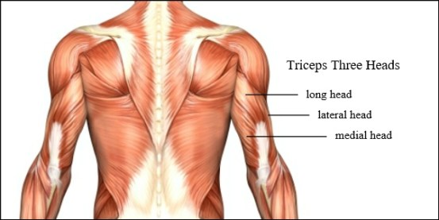
These are situated at the back of your upper arms. They oppose the biceps, and come into play when you straighten your arm or push something. Toning your triceps will help to get rid of the flabby bit that hangs down when you hold your arm out.
Forearm Muscles
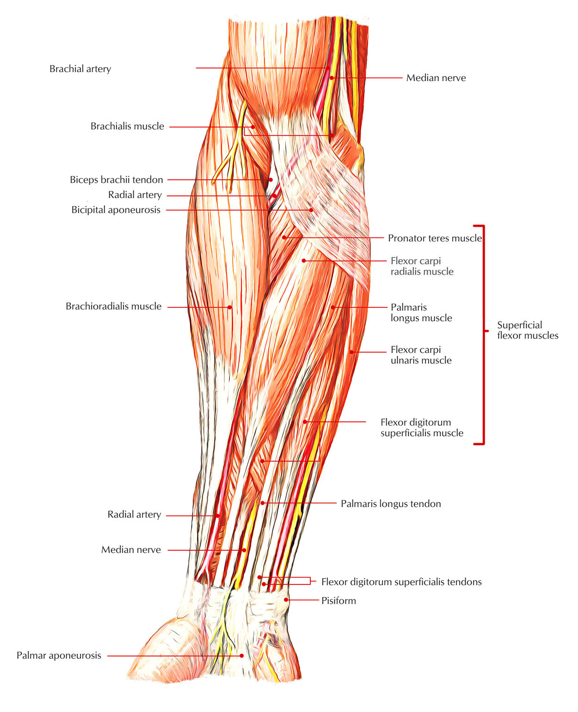
These are the muscles that run from your wrist to your elbow, and there are quite a lot of them lurking under there! Working and building these will not only help that overall toned look on your arms (which is what we're going for) but will also help with/ward off conditions such as Carpal Tunnel Syndrome and other wrist complaints.
The rectus abdominis muscle, also known as the "abdominal muscle" or "abs", is a paired muscle running vertically on each side of the anterior wall of the human abdomen, as well as that of some other mammals. There are two parallel muscles, separated by a midline band of connective tissue called the linea alba. It extends from the pubic symphysis, pubic crest and pubic tubercle inferiorly, to the xiphoid process and costal cartilages of ribs V to VII superiorly. The proximal attachments are the pubic crest and the pubic symphysis. It attaches distally at the costal cartilages of ribs 5-7 and the xiphoid process of the sternum.
The Abdominalus Sucurum is contained in the rectus sheath, which consists of the aponeuroses of the lateral abdominal muscles. Bands of connective tissue called the tendinous intersections traverse the rectus abdominis, which separates this parallel muscle into distinct muscle bellies. The outer, most lateral line, defining the "abs" is the linea semilunaris. In the abdomens of people with low body fat, these muscle bellies can be viewed externally and are commonly referred to as "four", "six", "eight", or "ten packs", depending on how many are visible; although, six is the most common.
➣ Lower Body
Gluteal muscles
The gluteal muscles are a group of three muscles which make up the buttocks: the gluteus maximus, gluteus medius and gluteus minimus. The three muscles originate from the ilium and sacrum and insert on the femur. The functions of the muscles include extension, abduction, external rotation, and internal rotation of the hip joint.
Quadriceps muscle
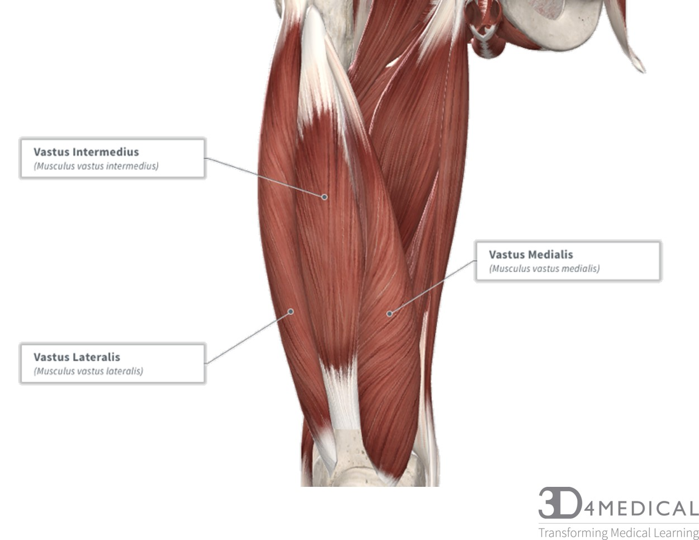
The quadriceps femoris is a large muscle group that includes the four prevailing muscles on the front of the thigh.
It is the great extensor muscle of the knee, forming a large fleshy mass which covers the front and sides of the femur. The name derives from Latin four-headed muscle of the femur.
Hamstrings muscle
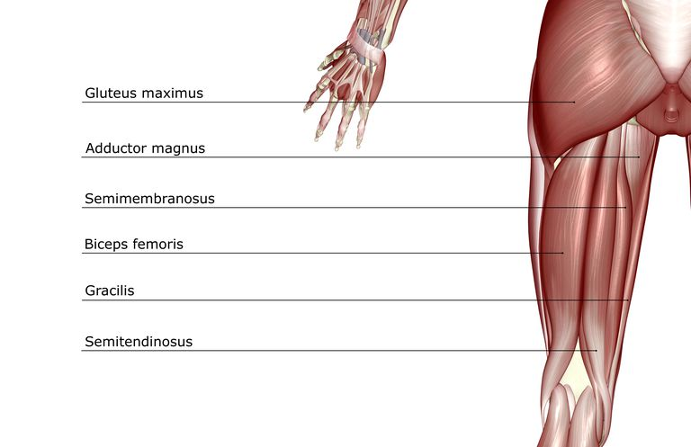
In human anatomy, a hamstring is one of the three posterior thigh muscles in between the hip and the knee (from medial to lateral: semimembranosus, semitendinosus and biceps femoris). The hamstrings are quite susceptible to injury. In quadrupeds, the hamstring is the single large tendon found behind the knee or comparable area.
Calves muscle
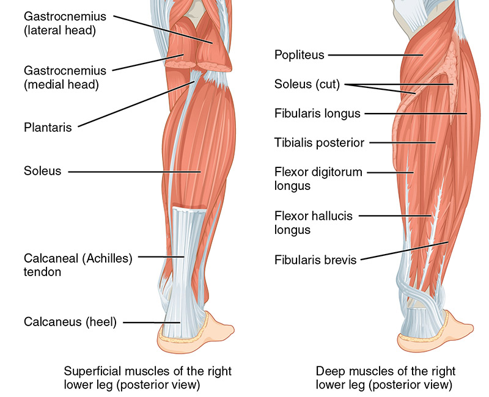
The calf is the back portion of the lower leg in human anatomy. The muscles within the calf correspond to the posterior compartment of the leg. The two largest muscles within this compartment are known together as the calf muscle and attach to the heel via the Achilles tendon. Several other, smaller muscles attach to the knee, the ankle, and via long tendons to the toes.
Training Program
Things to do before workout
Prioritize getting enough good quality sleep.
Stay Hydrated all day and during workout also.
Have a good meal with protein (before 30 minutes).
Warm up.
Make sure you're wearing the right clothes and footwear for the workout you're doing.
Things to do during workout
Good pair of headphones and a energy-filled playlist.
Breathing control.
Stay hydrated.
Use fresh towel to clean sweat.
Things to do after workout
Stretch it out.
Refuel with post-workout nutrition.
Consider a cool shower, especially if you worked out in the heat.(after 30 minutes)
Track your progress.
Equipments
You can either join a gym or you can train at home, now first few months stick to basics, after that when you are comfortable start weight training exercise. If you want to do it at home you will need some eqipments.
☞ Click here Make sure to buy a 3ft and 5ft bar atleast and if you can then a 7ft bar also.
You will also need a place to perform pull ups, chin ups and lots of other exercises.
You can also train without any equipments but that's training plan will be different
Exercise
Beginners(Home Based)
1. Regular Squats
Targeting Muscles: Hamstrings
Stand with your feet apart, directly under your hips, and place your hands on your hips.
Standing up tall, put your shoulders back, lift your chest, and pull in your abdominal muscles.
Bend your knees while keeping your upper body as straight as possible, as if you were lowering yourself onto a seat behind you. Lower yourself as far as you can without leaning your upper body more than a few inches forward.
Reps : (15-30) Sets : 3
Tip: Don’t allow your knees to go too far forward. You don’t want them to stick out past your toes.
Straighten your legs. Being careful not to lock your knees when you reach a standing position, straighten your legs. Stretch your arms out in front of you for added balance during squats.
2. Calf Raises
Targeting Muscles: Calf
Stand on the edge of a step(Like stairs).
Stand tall with your abdominals pulled in, the balls of your feet firmly planted on the step, and your heels hanging over the edge. Rest your hands against a wall or a sturdy object for balance.
Raise your heels a few inches above the edge of the step so that you’re on your tiptoes.
Hold the position for a moment, and then lower your heels below the platform, feeling a stretch in your calf muscles.
Reps : (15-30) Sets : 3
Tip: Lift as high as you can onto your toes and lower your heels down as much as your ankle flexibility allows. Push evenly through the entire width of your foot. Don’t push off from your big toe or the outside edge of your feet.
3. Pull Ups
Targeting Muscles: back and arm
Grip the bar with both hands, shoulder width apart, and your palms facing away from you.
Hang with arms and elbows fully locked out.
Pull yourself up, chin over the bar.
Keep your back tight, relax your neck and bring your shoulders away from the ears. Engage your core throughout.
Lower yourself slowly and controlled until your arms are fully extended and straight again.
Reps : (15-20) Sets : 3
4. Superman
Targeting Muscles: back
To begin, lie straight and face down on the floor or exercise mat. Your arms should be fully extended in front of you. This is the starting position.
Simultaneously raise your arms, legs, and chest off of the floor and hold this contraction for 2 seconds.
Slowly begin to lower your arms, legs and chest back down to the starting position while inhaling.
Repeat for the recommended amount of repetitions prescribed in your program.
Reps : 12-15(hold for 2 sec) Sets : 3
5. Push Ups
Targeting Muscles: Chest & back
Get down on the ground. Lay with your toes on the ground holding yourself up with your hands. Lower your torso to the ground until your elbows reach a 90-degree angle. Keep your elbows close to your body for more resistance. Keep your head facing forward. Try to have the tip of your nose pointed directly ahead. Keep your body in a flat plank—do not drop your hips, and do not have your butt hanging in the air. It is important to keep your body as straight as possible. Remember to breathe as you lower yourself.
When doing push-ups, your chest should come within inches of the ground each time you go down for a rep. Remember to keep your body at a flat level.
Raise yourself by pushing the ground away from you. Breathe out as you push. The power for that push will come from your shoulders and chest working in unison. The triceps (the muscle on the back side of your upper arm) are also contracted but they aren't the primary muscle group being used. Don't be tempted to use your rear end or your stomach. Continue to exert force until your arms are almost in a straight position again, make sure to not lock your arms.
Repeat lowering and raising at a steady pace. Each pair counts as a single push up. Do this until you finish your set or you hit your maximum.
Reps : (15-20) Sets : 3
Try close grip(shoulder width apart) and wide arm pushups also
6. Hanging Leg Raises
Targeting Muscles: core
While holding onto a chin-up bar raising an overhand grip, hang with your knees bent slightly.
Pull your hips up as you curl inward toward your chest using the muscles of your lower abs. Life your knees as close to your chest as possible, rounding your lower back at the top. Then, pause, feel the contraction in your lower-abdominal muscles, and return to the position you began with.
Reps : (10-15) Sets : 3
7. Sit Ups
Targeting Muscles: core
Start by lying on your back with your knees bent. Sit ups work best if you do them on a soft surface, such as a mattress. Keep your knees bent at a 90-degree angle, with your feet flat on the floor.
Put your fingertips on the back of your ears. Your elbows should be bent and pointing out at your sides. Cupping the back of your ears with your fingertips — as opposed to placing them on the back of your head — can help prevent you from pulling yourself up by your neck as you’re doing sit ups.
Lift your torso up as close to your thighs as possible. Do this with a smooth, steady motion, keeping your feet flat on the floor. When you’re done lifting your torso, your lower back should be off the floor.
Lower your torso down to the floor so you’re back in the starting position. Like you did when you lifted your torso up to your thighs, use a smooth and steady motion as you lower it down.
Reps : (10-15) Sets : 3
8. plank
Targeting Muscles: abdominals, back & shoulders
Being face down resting your weight on your forearms and toes and pull your abs in tight.
Maintain a hold where your body is in a straight line from shoulders to heels for as long as possible.
Tips: Keep a straight back and don't allow your hips to sag throughout the exercise hold. Try the 'RKC plank'. In this variation you don't just hold the position, you seriously squeeze your abs, glutes, quads, lats, etc.
Hold 1-2 minutes
Intermediate(Home Based)
You need to understand the split concept for this level
Push Split
Shoulder
Chest
Tricep
Pull Split
Back
Biceps
Abs & Legs
Day
Split
Monday
Push
Tuesday
Pull
Wednesday
Abs & Legs
Thursday
Push
Friday
Pull
Saturday
Abs & Legs
Sunday
Rest day
Push Day
Chest
1. Push Ups(shoulder width apart)
Targeting Muscles: Inner Chest
Get down on the ground. Lay with your toes on the ground holding yourself up with your hands. Lower your torso to the ground until your elbows reach a 90-degree angle. Keep your elbows close to your body for more resistance. Keep your head facing forward. Try to have the tip of your nose pointed directly ahead. Keep your body in a flat plank—do not drop your hips, and do not have your butt hanging in the air. It is important to keep your body as straight as possible. Remember to breathe as you lower yourself.
When doing push-ups, your chest should come within inches of the ground each time you go down for a rep. Remember to keep your body at a flat level.
Raise yourself by pushing the ground away from you. Breathe out as you push. The power for that push will come from your shoulders and chest working in unison. The triceps (the muscle on the back side of your upper arm) are also contracted but they aren't the primary muscle group being used. Don't be tempted to use your rear end or your stomach. Continue to exert force until your arms are almost in a straight position again, make sure to not lock your arms.
Repeat lowering and raising at a steady pace. Each pair counts as a single push up. Do this until you finish your set or you hit your maximum.
Reps : (20-30) Sets : 3-4
2. Push Ups(Wide arm)
Targeting Muscles: Middle Chest
Start in a plank position but with your hands out wider than your shoulders.
Begin to lower your body by bending your elbows, keeping your core tight and your back flat, until your chest grazes the floor. Elbows will flare more than in a standard pushup.
Immediately extend your elbows and push your body back up.
Reps : (20-30) Sets : 3-4
3. Dumbbell Flyes Floor
Targeting Muscles: Middle Chest
Lie down on a flat bench/floor with a dumbbell on each hand resting on top of your thighs. The palms of your hand will be facing each other.
Then using your thighs to help raise the dumbbells, lift the dumbbells one at a time so you can hold them in front of you at shoulder width with the palms of your hands facing each other. Raise the dumbbells up like you're pressing them, but stop and hold just before you lock out. This will be your starting position.
With a slight bend on your elbows in order to prevent stress at the biceps tendon, lower your arms out at both sides in a wide arc until you feel a stretch on your chest. Breathe in as you perform this portion of the movement.
Return your arms back to the starting position as you squeeze your chest muscles and breathe out.
Hold for a second at the contracted position and repeat the movement for the prescribed amount of repetitions.
Tips: Keep in mind that throughout the movement, the arms should remain stationary; the movement should only occur at the shoulder joint. Make sure to use the same arc of motion used to lower the weights.
Reps : (10-15) Sets : 3
4. Incline Push-Up
Targeting Muscles: upper Chest
Stand facing bench or sturdy elevated platform. Place hands on edge of bench or platform, slightly wider than shoulder width.
Position forefoot back from bench or platform with arms and body straight. Arms should be perpendicular to body. Keeping body straight, lower chest to edge of box or platform by bending arms.
Push body up until arms are extended. Repeat.
Reps : (15-20) Sets : 3-4
5. Decline Push-Up
Targeting Muscles: upper Chest
Lie on the floor face down and place your hands about 36 inches apart while holding your torso up at arms length. Move your feet up to a box or bench. This will be your starting position.
Next, lower yourself downward until your chest almost touches the floor as you inhale.
Now breathe out and press your upper body back up to the starting position while squeezing your chest.
After a brief pause at the top contracted position, you can begin to lower yourself downward again for as many repetitions as needed.
Reps : (15-20) Sets : 3-4
6. Dumbell Push Ups
Targeting Muscles: lower Chest
Get into pushup position with your arms straight and your hands resting on light dumbbells.
Lower your body to the floor by placing a bend in your elbows and keeping your back straight.
Push yourself back up untill your arms are straight and elbows unlocked. Then repeat.
Reps : (15-20) Sets : 3-4
7. Dips
Targeting Muscles: lower Chest
Grab the parallel bars and jump up, straighten your arms.
Lower your body by bending your arms while leaning forward.
Dip down until your shoulders are below your elbows.
Lift your body up by straightening your arms. /
Lock your elbows at the top.
Reps : (15-20) Sets : 3
Bench press(incline, decline, normal) is best to develop chest but if you have not bought the bench then stick to this routine.
Triceps
1. Diamond Push Ups
Targeting Muscles: Chest & Triceps(mostly)
Get in the modified push-up position on your knees but with your hands together and back flat. Spread your fingers so that your index fingers and thumbs form a diamond, and extend your arms. This is your start position.
Allow your elbows to break, lowering your chest toward the floor while keeping your back flat.
Press back up to full arm extension, repeating for the required number of reps.
To make the movement more difficult, stay up on your toes rather than on your knees.
Reps : (10-20) Sets : 3
2. Standing Dumbbell Triceps Extension
Targeting Muscles: Triceps
To begin, stand up with a dumbbell held by both hands. Your feet should be about shoulder width apart from each other. Slowly use both hands to grab the dumbbell and lift it over your head until both arms are fully extended.
The resistance should be resting in the palms of your hands with your thumbs around it. The palm of the hands should be facing up towards the ceiling. This will be your starting position.
Keeping your upper arms close to your head with elbows in and perpendicular to the floor, lower the resistance in a semicircular motion behind your head until your forearms touch your biceps.
Go back to the starting position by using the triceps to raise the dumbbell. Breathe out as you perform this step.
Tip: The upper arms should remain stationary and only the forearms should move. Breathe in as you perform this step.
Reps : (8-15) Sets : 3-4
3. Decline EZ Bar Triceps Extension
barbell = 3ft or 5ft
You can use a straight bar or dumbbells to perform this movement. You can also perform it on a flat bench as well.
Targeting Muscles: Triceps
Secure your legs at the end of the decline bench and slowly lay down on the bench.
Using a close grip (a grip that is slightly less than shoulder width), lift the EZ bar from the rack and hold it straight over you with your arms locked and elbows in. The arms should be perpendicular to the floor. This will be your starting position.
As you breathe in and you keep the upper arms stationary, bring the bar down slowly by moving your forearms in a semicircular motion towards you until you feel the bar slightly touch your forehead. Breathe in as you perform this portion of the movement.
Lift the bar back to the starting position by contracting the triceps and exhaling.
Tip: In order to protect your rotator cuff, it is best if you have a spotter help you lift the barbell off the rack.
Reps : (8-15) Sets : 3-4
4. Triceps KickBacks
Targeting Muscles: Triceps
Kneel comfortably on a bench with the same leg that you hold the weight with. Now with your back straight and your head looking straight ahead start with the weight at a 90 degree angle.
Extend the weight keeping your elbow completely stationary.
Tip: In order to protect your rotator cuff, it is best if you have a spotter help you lift the barbell off the rack.
Reps : (12-15) Sets : 3-4
5. Bench Dips
You can place your legs on top of another flat bench in front of you in order to make the exercise more challenging. If that variation also becomes easy, then you can have a partner place plates on top of your lap. Make sure that in this case the partner ensures that the weights stay there throughout the movement.
Targeting Muscles: Triceps
For this exercise you will need to place a bench behind your back. With the bench perpendicular to your body, and while looking away from it, hold on to the bench on its edge with the hands fully extended, separated at shoulder width. The legs will be extended forward, bent at the waist and perpendicular to your torso. This will be your starting position.
Slowly lower your body as you inhale by bending at the elbows until you lower yourself far enough to where there is an angle slightly smaller than 90 degrees between the upper arm and the forearm.
Using your triceps to bring your torso up again, lift yourself back to the starting position.
Tip: In order to protect your rotator cuff, it is best if you have a spotter help you lift the barbell off the rack. Keep the elbows as close as possible throughout the movement. Forearms should always be pointing down.
Reps : (15-20) Sets : 3
6. Standing Overhead Barbell Triceps Extension
barbell = 3ft or 5ft
Another way to perform this exercise is to use dumbbells or a triceps blaster bar. You can also use cables with a bar or rope attachment.
Targeting Muscles: Triceps
To begin, stand up holding a barbell or e-z bar using a pronated grip (palms facing forward) with your hands closer than shoulder width apart from each other. Your feet should be about shoulder width apart.
Now elevate the barbell above your head until your arms are fully extended. Keep your elbows in. This will be your starting position.
Keeping your upper arms close to your head and elbows in, perpendicular to the floor, lower the resistance in a semicircular motion behind your head until your forearms touch your biceps.
Go back to the starting position by using the triceps to raise the barbell. Breathe out as you perform this step.
Tip: The upper arms should remain stationary and only the forearms should move. Breathe in as you perform this step.
Reps : (8-15) Sets : 3-4
Shoulders
1. Seated Dumbbell Shoulder Press
Targeting Muscles: Shoulder
Grab a couple of dumbbells and sit on a military press bench or a utility bench that has a back support on it as you place the dumbbells upright on top of your thighs.
Clean the dumbbells up one at a time by using your thighs to bring the dumbbells up to shoulder height at each side.
Rotate the wrists so that the palms of your hands are facing forward. This is your starting position.
As you exhale, push the dumbbells up until they touch at the top. After a second pause, slowly come down back to the starting position as you inhale.
Reps : (12-15) Sets : 3
2. Seated Arnold Dumbbell Press
Targeting Muscles: Shoulder
Sit on an exercise bench with back support and hold two dumbbells in front of you at about upper chest level with your palms facing your body and your elbows bent.
Now to perform the movement, raise the dumbbells as you rotate the palms of your hands until they are facing forward.
Continue lifting the dumbbells until your arms are extended above you in straight arm position. Breathe out as you perform this portion of the movement.
After a second pause at the top, begin to lower the dumbbells to the original position by rotating the palms of your hands towards you.
Tip: Your arms should be next to your torso. The starting position should look like the contracted portion of a dumbbell curl. The left arm will be rotated in a counter clockwise manner while the right one will be rotated clockwise. Breathe in as you perform this portion of the movement.
Reps : (12-15) Sets : 3
3. Barbell Front Raises
barbell = 3ft or 5ft Targeting Muscles: Shoulder
Stand with your legs slightly spread. Take and overhand grip on barbell and rest the barbell on your thighs.
Keep your back straight and your abdominals contracted.
Inhale and raise the barbell forward with your arm straight untill it reaches eye level.
Exhale as you return back to your starting posititon.
Reps : (12-15) Sets : 3
4. Dumbbell Lateral Raise
Targeting Muscles: Shoulder
Stand up with your torso upright and a dumbbell on each hand being held at arms length. The elbows should be close to the torso.
The palms of the hands should be facing your torso. Your feet should be about shoulder width apart. This will be your starting position.
Keeping your arms straight and the torso stationary, lift the weights out to your sides until they are about shoulder level height while exhaling.
Feel the contraction for a second and begin to lower the weights back down to the starting position while inhaling.
Tip: Keep the palms facing down with the little finger slightly higher while lifting and lowering the weights as it will concentrate the stress on your shoulders mainly.
Reps : (12-15) Sets : 3
5. Standing Military Press
barbell = 5ft or 7ft Targeting Muscles: Shoulder
Start by placing a barbell that is about chest high on a squat rack. Once you have selected the weights, grab the barbell using a pronated (palms facing forward) grip. Make sure to grip the bar wider than shoulder width apart from each other.
Slightly bend the knees and place the barbell on your collar bone. Lift the barbell up keeping it lying on your chest. Take a step back and position your feet shoulder width apart from each other.
Once you pick up the barbell with the correct grip length, lift the bar up over your head by locking your arms. Hold at about shoulder level and slightly in front of your head. This is your starting position.
Lower the bar down to the collarbone slowly as you inhale. Lift the bar back up to the starting position as you exhale.
Tip: Keep the palms facing down with the little finger slightly higher while lifting and lowering the weights as it will concentrate the stress on your shoulders mainly.
Reps : (12-15) Sets : 3
Pull Day
Back
1. Pull Ups
Targeting Muscles: back and arm
Grip the bar with both hands, shoulder width apart, and your palms facing away from you.
Hang with arms and elbows fully locked out.
Pull yourself up, chin over the bar.
Keep your back tight, relax your neck and bring your shoulders away from the ears. Engage your core throughout.
Lower yourself slowly and controlled until your arms are fully extended and straight again.
Reps : (15-20) Sets : 3
2. Deadlift
(If you don't perform deadlift with correct method or posture you will get very bad back injury. So be very cautious)
barbell = 7ft Targeting Muscles: Lower back
Begin by having a platform or weight plates that you can stand on, usually 1-3 inches in height. Approach the bar so that it is centered over your feet. You feet should be about hip width apart. Bend at the hip to grip the bar at shoulder width, allowing your shoulder blades to protract. Typically, you would use an overhand grip or an over/under grip on heavier sets.
With your feet, and your grip set, take a big breath and then lower your hips and bend the knees until your shins contact the bar. Look forward with your head, keep your chest up and your back arched, and begin driving through the heels to move the weight upward. After the bar passes the knees, aggressively pull the bar back, pulling your shoulder blades together as you drive your hips forward into the bar.
Lower the bar by bending at the hips and guiding it to the floor.
Reps : (10-15) Sets : 3
3. Barbell Row.
(This exercise is not recommended for people with back problems. A Low Pulley Row is a better choice for people with back issues. Also, just like with the bent knee dead-lift, if you have a healthy back, ensure perfect form and never slouch the back forward as this can cause back injury. Be cautious as well with the weight used; in case of doubt, use less weight rather than more.)
barbell = 7ft Targeting Muscles: Middle back
Holding a barbell with a pronated grip (palms facing down), bend your knees slightly and bring your torso forward, by bending at the waist, while keeping the back straight until it is almost parallel to the floor. Tip: Make sure that you keep the head up. The barbell should hang directly in front of you as your arms hang perpendicular to the floor and your torso. This is your starting position.
Now, while keeping the torso stationary, breathe out and lift the barbell to you. Keep the elbows close to the body and only use the forearms to hold the weight. At the top contracted position, squeeze the back muscles and hold for a brief pause.
Then inhale and slowly lower the barbell back to the starting position.
Reps : (10-15) Sets : 3
4. One-Arm Dumbbell Row
Targeting Muscles: Middle back
Choose a flat bench and place a dumbbell on each side of it.
Place the right leg on top of the end of the bench, bend your torso forward from the waist until your upper body is parallel to the floor, and place your right hand on the other end of the bench for support.
Use the left hand to pick up the dumbbell on the floor and hold the weight while keeping your lower back straight. The palm of the hand should be facing your torso. This will be your starting position.
Pull the resistance straight up to the side of your chest, keeping your upper arm close to your side and keeping the torso stationary. Breathe out as you perform this step.
Lower the resistance straight down to the starting position. Breathe in as you perform this step.
Repeat the movement for the specified amount of repetitions. Switch sides and repeat again with the other arm.
Reps : (12-15) Sets : 3
5. Seated Bent Over Row
Targeting Muscles: Middle back
Sit on the end of a bench with your knees bent, feet flat on the floor and place a pair of dumbbells on the floor at your sides. Bend forward at your waist as far as you can untill your back is almost parallel to the floor, your chest should touch your legs. Reach down, grab a weight in each hand, and let your arms hang straight down.
Turn the weights so the palms face in.
Without moving anything but your arms, slowly pull the dumbbells up close to your body to the sides of your chest.
Hold for a second, then lower the weights back down.
Reps : (12-15) Sets : 3
6. Barbell Shrug
barbell = 5ft-7ft Targeting Muscles: Trap
Stand up straight with your feet at shoulder width as you hold a barbell with both hands in front of you using a pronated grip (palms facing the thighs).
Raise your shoulders up as far as you can go as you breathe out and hold the contraction for a second.
Slowly return to the starting position as you breathe in.
Tip: Your hands should be a little wider than shoulder width apart. You can use wrist wraps for this exercise for a better grip. This will be your starting position. Refrain from trying to lift the barbell by using your biceps.
Reps : (12-15) Sets : 3
Biceps
1. Chin Ups
Targeting Muscles: back & Biceps
Grip the bar approximately shoulder width apart, with your palms facing away towards you with an underhand/supinated grip.
Hang from the bar with your arms extended. Squeeze your shoulder blades together slightly, pulling your shoulders backwards. Imagine you’re trying to squeeze a big orange between your shoulder blades.
Tense your abdominal muscles, drawing your belly button inwards towards your spine. This helps to activate your core, improve your balance, and make sure you’re using the right muscles.
Pull yourself up, by closing the elbow joint and squeezing your shoulder blades down and together. You should think of this as starting by putting your shoulder blades in position, using the arms through the middle, then tucking your shoulder blades down at the top of the movement.
Pause for a moment at the top and slowly, under control, lower yourself back down to the starting position. The lowering phase should normally take 2 to 3 seconds, and you should stay in-control all the way down.
Reps : (10-15) Sets : 3
2. Barbell Curl
barbell = 3ft-5ft Targeting Muscles: Biceps
Stand up with your torso upright while holding a barbell at a shoulder-width grip. The palm of your hands should be facing forward and the elbows should be close to the torso. This will be your starting position.
While holding the upper arms stationary, curl the weights forward while contracting the biceps as you breathe out.
TContinue the movement until your biceps are fully contracted and the bar is at shoulder level. Hold the contracted position for a second and squeeze the biceps hard.
Slowly begin to bring the bar back to starting position as your breathe in.
Reps : (8-15) Sets : 4-6
3. Dumbbell Curls
Targeting Muscles: Biceps
Stand up straight with a dumbbell in each hand at arm's length. Keep your elbows close to your torso and rotate the palms of your hands until they are facing forward. This will be your starting position.
Now, keeping the upper arms stationary, exhale and curl the weights while contracting your biceps. Continue to raise the weights until your biceps are fully contracted and the dumbbells are at shoulder level. Hold the contracted position for a brief pause as you squeeze your biceps.
Then, inhale and slowly begin to lower the dumbbells back to the starting position.
Reps : (8-15) Sets : 4
4. Hammer Curls
Targeting Muscles: Biceps
Stand up with your torso upright and a dumbbell on each hand being held at arms length. The elbows should be close to the torso.
The palms of the hands should be facing your torso. This will be your starting position.
Now, while holding your upper arm stationary, exhale and curl the weight forward while contracting the biceps. Continue to raise the weight until the biceps are fully contracted and the dumbbell is at shoulder level. Hold the contracted position for a brief moment as you squeeze the biceps.
After the brief pause, inhale and slowly begin the lower the dumbbells back down to the starting position.
Reps : (8-15) Sets : 4
5. Preacher Curl
barbell = 3ft-5ft Targeting Muscles: Biceps
To perform this movement you will need a preacher bench and an E-Z bar. Grab the E-Z curl bar at the close inner handle (either have someone hand you the bar which is preferable or grab the bar from the front bar rest provided by most preacher benches). The palm of your hands should be facing forward and they should be slightly tilted inwards due to the shape of the bar.
With the upper arms positioned against the preacher bench pad and the chest against it, hold the E-Z Curl Bar at shoulder length. This will be your starting position.
As you breathe in, slowly lower the bar until your upper arm is extended and the biceps is fully stretched.
As you exhale, use the biceps to curl the weight up until your biceps is fully contracted and the bar is at shoulder height. Squeeze the biceps hard and hold this position for a second.
Reps : (8-15) Sets : 4-6
6. Concentration Curls
Targeting Muscles: Biceps
Sit down on a flat bench with one dumbbell in front of you between your legs. Your legs should be spread with your knees bent and feet on the floor.
Use your right arm to pick the dumbbell up. Place the back of your right upper arm on the top of your inner right thigh. Rotate the palm of your hand until it is facing forward away from your thigh.
While holding the upper arm stationary, curl the weights forward while contracting the biceps as you breathe out. Only the forearms should move. Continue the movement until your biceps are fully contracted and the dumbbells are at shoulder level.
Slowly begin to bring the dumbbells back to starting position as your breathe in. Caution: Avoid swinging motions at any time.
Tip: Your arm should be extended and the dumbbell should be above the floor. At the top of the movement make sure that the little finger of your arm is higher than your thumb. This guarantees a good contraction. Hold the contracted position for a second as you squeeze the biceps.
Reps : (8-15) Sets : 4
Abs
Doing abs workout and squats burns a lot of calories, so be cautious.
1. Hanging Leg Raises
Targeting Muscles: abs
While holding onto a chin-up bar raising an overhand grip, hang with your knees bent slightly.
Pull your hips up as you curl inward toward your chest using the muscles of your lower abs. Life your knees as close to your chest as possible, rounding your lower back at the top. Then, pause, feel the contraction in your lower-abdominal muscles, and return to the position you began with.
Reps : (10-15) Sets : 3
2. Sit Ups
Targeting Muscles: abs
Lie down on the floor placing your feet either under something that will not move or by having a partner hold them. Your legs should be bent at the knees.
Place your hands behind your head and lock them together by clasping your fingers. This is the starting position.
Elevate your upper body so that it creates an imaginary V-shape with your thighs. Breathe out when performing this part of the exercise.
Once you feel the contraction for a second, lower your upper body back down to the starting position while inhaling.
Reps : (15-20) Sets : 3
3. Cross-Body Crunch
Targeting Muscles: abs
Lie flat on your back and bend your knees about 60 degrees.
Keep your feet flat on the floor and place your hands loosely behind your head. This will be your starting position.
Now curl up and bring your right elbow and shoulder across your body while bring your left knee in toward your left shoulder at the same time. Reach with your elbow and try to touch your knee. Exhale as you perform this movement.
Now go back down to the starting position as you inhale and repeat with the left elbow and the right knee.
Reps : (15-20)both side Sets : 3
4. Plate Twist
Targeting Muscles: abs
Lie down on the floor or an exercise mat with your legs fully extended and your upper body upright. Grab the plate by its sides with both hands out in front of your abdominals with your arms slightly bent.
Slowly cross your legs near your ankles and lift them up off the ground. Your knees should also be bent slightly. Note: Move your upper body back slightly to help keep you balanced turning this exercise. This is the starting position.
Move the plate to the left side and touch the floor with it. Breathe out as you perform that movement.
Come back to the starting position as you breathe in and then repeat the movement but this time to the right side of the body. Tip: Use a slow controlled movement at all times. Jerking motions can injure the back.
Reps : (15-20)both side Sets : 3
5. plank
Targeting Muscles: abdominals, back & shoulders
Being face down resting your weight on your forearms and toes and pull your abs in tight.
Maintain a hold where your body is in a straight line from shoulders to heels for as long as possible.
Tips: Keep a straight back and don't allow your hips to sag throughout the exercise hold. Try the 'RKC plank'. In this variation you don't just hold the position, you seriously squeeze your abs, glutes, quads, lats, etc.
Hold 1-2 minutes
Legs & Glute
1. Squats(feet position is wider)
Targeting Muscles: Hamstrings, Glute, Quadriceps
Stand with your feet apart, directly under your hips, and place your hands on your hips.
Standing up tall, put your shoulders back, lift your chest, and pull in your abdominal muscles.
Bend your knees while keeping your upper body as straight as possible, as if you were lowering yourself onto a seat behind you. Lower yourself as far as you can without leaning your upper body more than a few inches forward.
Reps : (15-30) Sets : 3
Tip: Don’t allow your knees to go too far forward. You don’t want them to stick out past your toes.
Straighten your legs. Being careful not to lock your knees when you reach a standing position, straighten your legs. Stretch your arms out in front of you for added balance during squats.
2. Calf Raises
Targeting Muscles: Calf
Stand on the edge of a step(Like stairs).
Stand tall with your abdominals pulled in, the balls of your feet firmly planted on the step, and your heels hanging over the edge. Rest your hands against a wall or a sturdy object for balance.
Raise your heels a few inches above the edge of the step so that you’re on your tiptoes.
Hold the position for a moment, and then lower your heels below the platform, feeling a stretch in your calf muscles.
Reps : (15-30) Sets : 3
Tip: Lift as high as you can onto your toes and lower your heels down as much as your ankle flexibility allows. Push evenly through the entire width of your foot. Don’t push off from your big toe or the outside edge of your feet.
3. Dumbbell Lunges
Caution: This is a movement that requires a great deal of balance so if you suffer from balance problems you may wish to either avoid it or just use your own bodyweight while holding on to a fixed object. Definitely never perform with a barbell on your back if you suffer from balance issues.
Targeting Muscles: Quadriceps
Stand with your torso upright holding two dumbbells in your hands by your sides. This will be your starting position.
Step forward with your right leg around 2 feet or so from the foot being left stationary behind and lower your upper body down, while keeping the torso upright and maintaining balance. Inhale as you go down. Note: As in the other exercises, do not allow your knee to go forward beyond your toes as you come down, as this will put undue stress on the knee joint. Make sure that you keep your front shin perpendicular to the ground.
Using mainly the heel of your foot, push up and go back to the starting position as you exhale.
Hold the position for a moment, and then lower your heels below the platform, feeling a stretch in your calf muscles.
Reps : (10-15) Sets : 3
4. Front Bench Jump
Targeting Muscles: Quadriceps
Begin with a box or bench 1-2 feet in front of you. Stand with your feet shoulder width apart. This will be your starting position.
Perform a short squat in preparation for the jump; swing your arms behind you.
Rebound out of this position, extending through the hips, knees, and ankles to jump as high as possible. Swing your arms forward and up.
Jump over the bench, landing with the knees bent, absorbing the impact through the legs.
Turn around and face the opposite direction, then jump back over the bench.
Reps : (10-15) Sets : 3
5. Barbell Hip Thrust
Targeting Muscles: Glutes
Begin seated on the ground with a bench directly behind you. Have a loaded barbell over your legs. Using a fat bar or having a pad on the bar can greatly reduce the discomfort caused by this exercise.
Roll the bar so that it is directly above your hips, and lean back against the bench so that your shoulder blades are near the top of it.
Begin the movement by driving through your feet, extending your hips vertically through the bar. Your weight should be supported by your shoulder blades and your feet. Extend as far as possible, then reverse the motion to return to the starting position.
Reps : (10-15) Sets : 3
6. Sumo Deadlift
Targeting Muscles: Hamstrings
Begin with a bar loaded on the ground. Approach the bar so that the bar intersects the middle of the feet. The feet should be set very wide, near the collars. Bend at the hips to grip the bar. The arms should be directly below the shoulders, inside the legs, and you can use a pronated grip, a mixed grip, or hook grip. Relax the shoulders, which in effect lengthens your arms.
Take a breath, and then lower your hips, looking forward with your head with your chest up. Drive through the floor, spreading your feet apart, with your weight on the back half of your feet. Extend through the hips and knees.
As the bar passes through the knees, lean back and drive the hips into the bar, pulling your shoulder blades together.
Return the weight to the ground by bending at the hips and controlling the weight on the way down.
Reps : (10-15) Sets : 3
Progressive Overload:
What Is Progressive Overload?
This principle involves continually increasing the demands on the musculoskeletal system to continually make gains in muscle size, strength, and endurance. Simply put, in order to get bigger and stronger, you must continually make your muscles work harder than they're used to. Most often, that means increasing the resistance, but as you'll find below, there are other methods to increasing the overload.
Conversely, if the demands on the target muscle groups are not at least maintained or are actually decreased, your muscles will atrophy, losing size and strength.
Progressive overload is a very simple but crucial concept, laying the foundation upon which successful resistance training is built.
The progressive-overload principle doesn't apply just to lifting weights to increase muscle growth and strength; it can also be applied to cardiovascular-fitness programs, creating physiological changes that affect aerobic metabolism and the cardiorespiratory system.
Methods Of Increasing The Overload
1. Increase The Resistance
2. Increase The Reps
3. Increase The Volume
4. Increase Training Frequency
5. Decrease Rest Time Between Sets In simple if you are taking 5kg dumbbell in both hands and doing 15 reps in the first set then in the next set increase the weight by (1 to 2.5)kg and do 8-10 reps.
My name is Subhadip Dutta. I am the creator of this website. This website contains everything that you need to know before you hit the gym or start working out in home. There are several features like BMR calculator, length converter, weight converter, step by step guidance about diet and workout. I also included a 3000 up calories/day diet in budget. I also made sure that you became complete aware about every muscels of your body and a workout plan for beginners and intermediates. This website is completely responsive for all kind of devices, though I am not sure if it supports all browser(use google chrome.)
This is my 4th project. This is the first project where I implemented javascript completely on my own. Though I studied javascript only a little bit. If you like this website please kindly inform me, it will incourage me in my work. Thank you.
A school project(class 12) Simple table based design, not responisve for modile or tablet. (click on the image to visit the site)
➁ Tribute to Iron Man
Simple design using Html and CSS and JS, only responsive for pc/laptop. (click on the image to visit the site)
➂ The Arsenal of Indian Armed Forces
Upgraded than the previous one, fully resonsive for all devices, night mode, modal images features, easiest navigation. (click on the image to visit the site)
Gallery Some images of the website that I have created before


 – Ectomorph: Ectomorphs are naturally thin with skinny limbs, a high tolerance for carbohydrates, and a fast metabolic rate. A good starting ratio is 25% protein, 55% carbs and 20% fat.
– Ectomorph: Ectomorphs are naturally thin with skinny limbs, a high tolerance for carbohydrates, and a fast metabolic rate. A good starting ratio is 25% protein, 55% carbs and 20% fat.


.jpg) Four small muscles beneath your shoulder that help to hold your arm in place. Firming and strengthening here helps to pull in your underarm. Think roll-on deodorant ads, and having a smooth looking armpit when raising your arms and getting down on the dancefloor.
Four small muscles beneath your shoulder that help to hold your arm in place. Firming and strengthening here helps to pull in your underarm. Think roll-on deodorant ads, and having a smooth looking armpit when raising your arms and getting down on the dancefloor.
 The gluteal muscles are a group of three muscles which make up the buttocks: the gluteus maximus, gluteus medius and gluteus minimus. The three muscles originate from the ilium and sacrum and insert on the femur. The functions of the muscles include extension, abduction, external rotation, and internal rotation of the hip joint.
The gluteal muscles are a group of three muscles which make up the buttocks: the gluteus maximus, gluteus medius and gluteus minimus. The three muscles originate from the ilium and sacrum and insert on the femur. The functions of the muscles include extension, abduction, external rotation, and internal rotation of the hip joint.


.png)
.png)


.png)
.png)


.png)
.png)

.png)
.png)


.png)
.png)


.png)
.png)
.png)
.png)


.png)
.png)

.png)
.png)
.png)
.png)


.png)
.png)
.png)
.png)
.png)
.png)
.png)
.png)
.png)
.png)
.png)
.png)
.png)
.png)
.png)